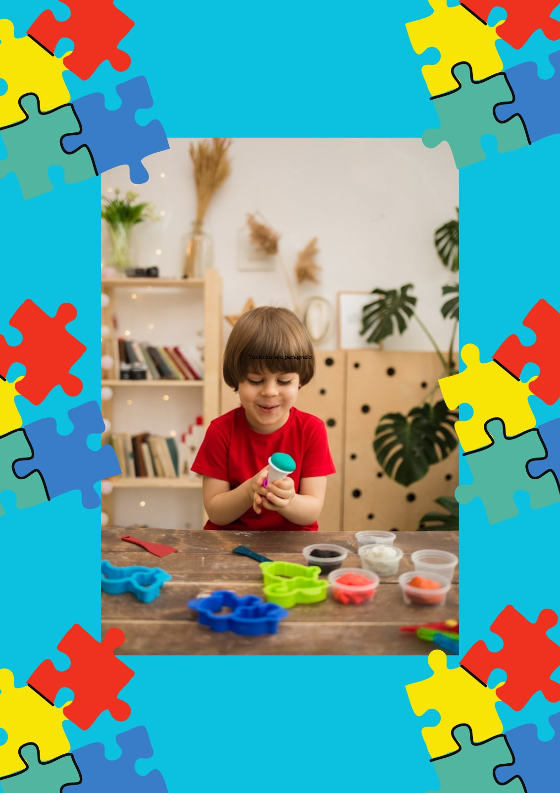
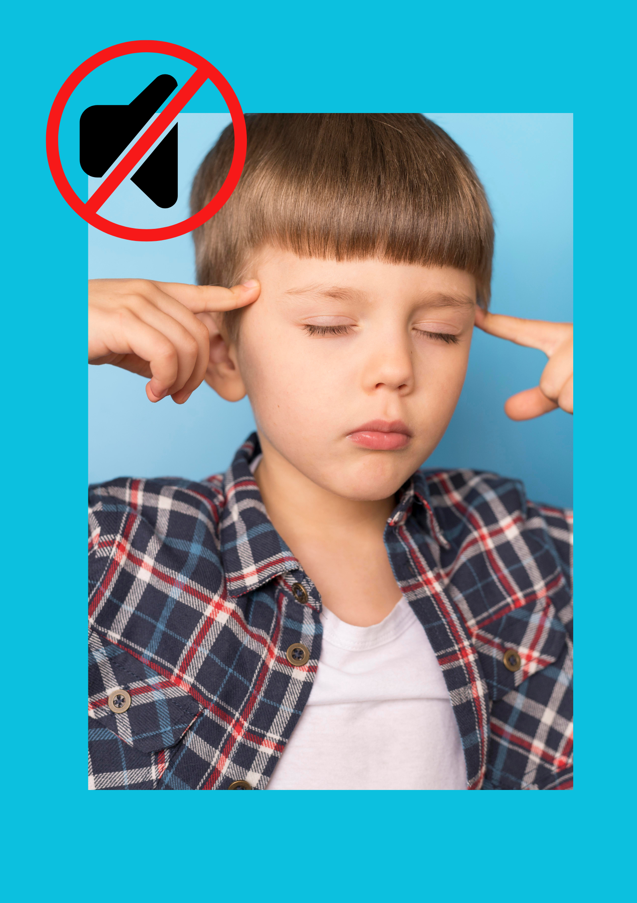
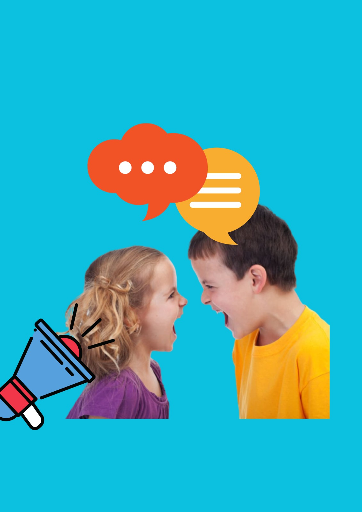
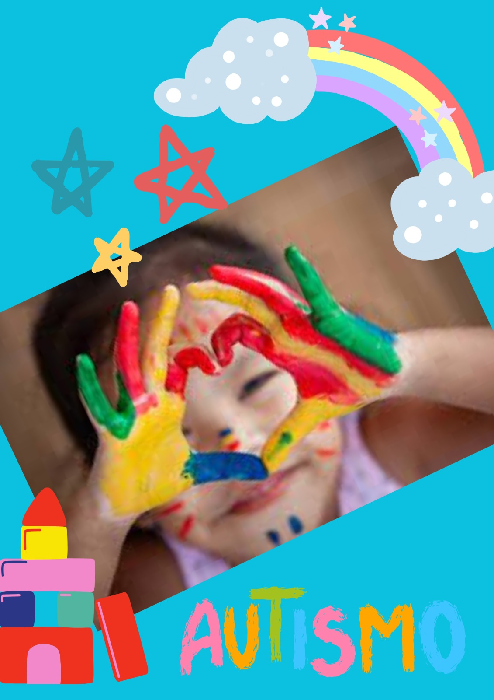
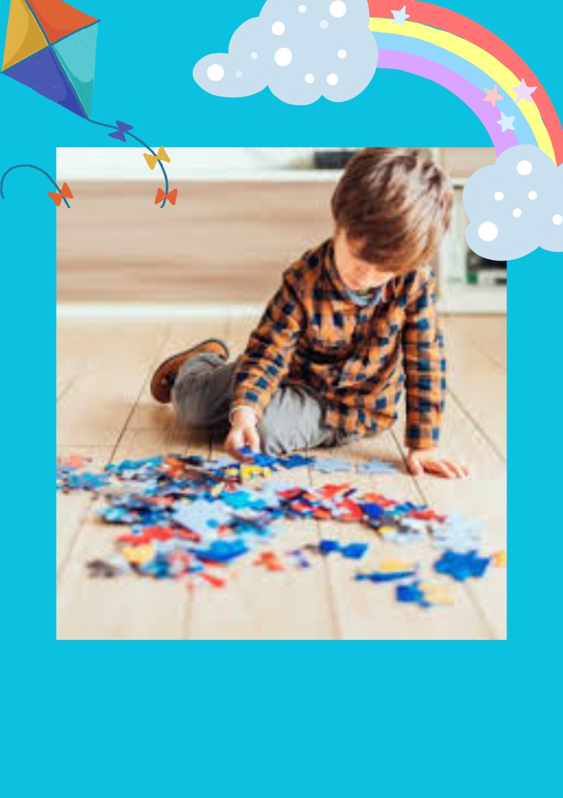
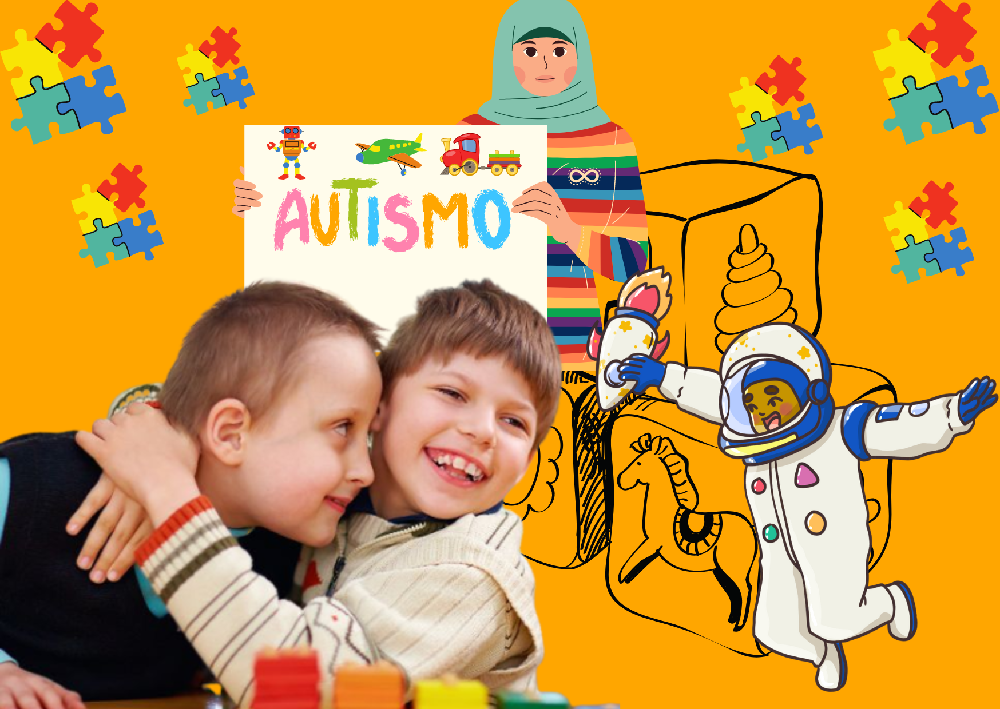
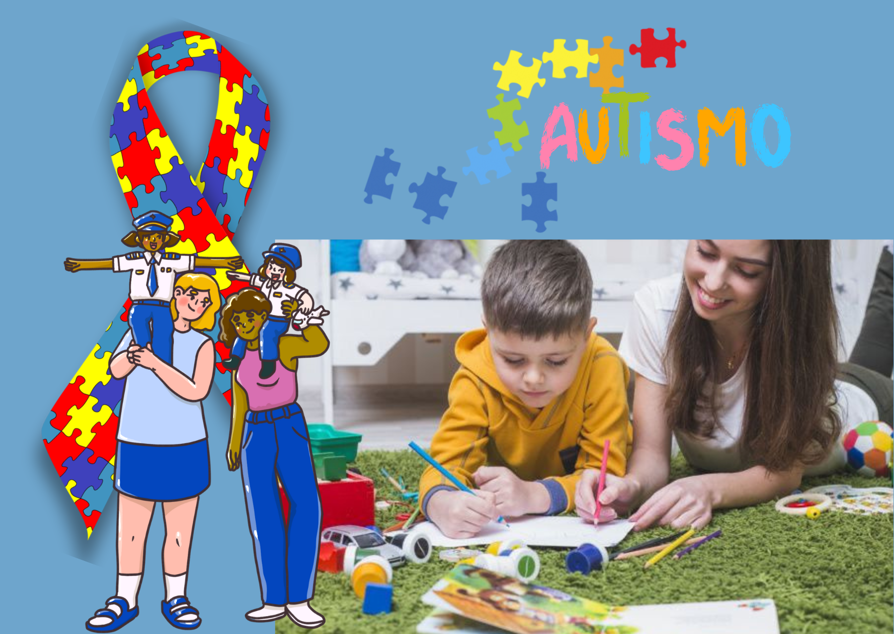
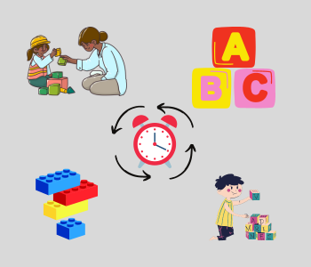
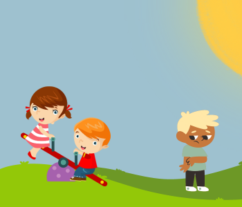
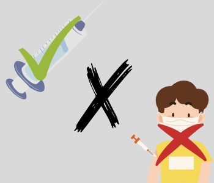

Inclusão social
Autismo não se cura, se compreende
Sobre Inclusão Social
O que é inclusão social?
 É o ato de incluir na sociedade categorias de pessoas historicamente excluídas do processo de socialização, como negros, indígenas, pessoas com necessidades especiais, homossexuais, travestis e transgêneros, bem como aqueles em situação de vulnerabilidade socioeconômica, como moradores de rua e pessoas de baixa renda.
É o ato de incluir na sociedade categorias de pessoas historicamente excluídas do processo de socialização, como negros, indígenas, pessoas com necessidades especiais, homossexuais, travestis e transgêneros, bem como aqueles em situação de vulnerabilidade socioeconômica, como moradores de rua e pessoas de baixa renda.
Diagnóstico:
O autismo é um transtorno neurológico que afeta a comunicação, a interação social e o comportamento de uma pessoa. As características do autismo podem variar de pessoa para pessoa, mas muitas vezes incluem dificuldades em compreender e expressar emoções, dificuldades em iniciar ou manter conversas e comportamentos repetitivos.
O diagnóstico do autismo geralmente é feito na infância, mas pode ocorrer em qualquer idade. Embora ainda não haja cura para o autismo, o tratamento precoce pode ajudar a melhorar as habilidades sociais, emocionais e de comunicação de uma pessoa com autismo.
É importante lembrar que cada pessoa com autismo é única e tem suas próprias habilidades e desafios. É essencial que a sociedade se esforce para incluir e valorizar as pessoas com autismo, oferecendo suporte e compreensão em vez de estigmatização ou exclusão.
Tipos de autismo:
Transtorno do Espectro Autista (TEA)
É o tipo mais comum de autismo e engloba um espectro amplo de sintomas e níveis de gravidade. Elas podem apresentar dificuldades na comunicação social e interação social, comportamentos repetitivos e interesses restritos, além de outras características.
Síndrome de Asperger
É uma forma mais branda de autismo, em que as pessoas têm dificuldades na comunicação e interação social, mas não apresentam atrasos significativos no desenvolvimento da linguagem.
Transtorno Desintegrativo da Infância
É um tipo raro de autismo em que as crianças apresentam desenvolvimento normal até os 2 anos de idade, mas depois perdem habilidades linguísticas, sociais e comportamentais.
Transtorno Invasivo do Desenvolvimento não Especificado (TID-NE)
É um termo genérico para descrever pessoas que apresentam alguns sintomas do autismo, mas não atendem aos critérios diagnósticos completos para TEA ou outros tipos de autismo.
Sintomas do autismo:

Comportamentos repetitivos
Repetir movimentos corporais, insistência em seguir rotinas e padrões rígidos de comportamento e interesses limitados.
Dificuldades na interação social
Dificuldade em fazer amigos, manter relacionamentos, falta de interesse em compartilhar experiências.

Dificuldades na comunicação
Seja na comunicação verbal e não-verbal. Como dificuldade em iniciar ou manter uma conversa, falta de contato visual e padrões de fala repetitivos ou incomuns.

Comportamentos impulsivos ou agressivos
Incluindo ações como bater, morder ou arranhar.

Sensibilidade sensorial
Sensibilidade sensorial incomum, como hipersensibilidade ou insensibilidade ao som, toque, cheiro, sabor ou luz.

Dificuldades em compreender
Dificuldade de usar a linguagem corporal e expressões faciais, e em entender piadas e ironias. Dificuldade em entender as emoções e interações dos outros.
Aceitação:
A aceitação do autismo é um processo fundamental para promover a inclusão e a compreensão das pessoas que estão no espectro autista. O autismo é uma condição neurológica que afeta a comunicação, a interação social e o comportamento, e é considerado um transtorno do espectro autista (TEA).
Ela envolve reconhecer que cada pessoa no espectro autista é única e valiosa, e que suas diferenças devem ser respeitadas e valorizadas. Isso significa entender que as pessoas com autismo podem ter habilidades e talentos únicos, bem como desafios específicos, e que todos merecem as mesmas oportunidades e tratamento justo.
A aceitação do autismo também envolve a conscientização sobre as necessidades e os direitos das pessoas com TEA, e a criação de um ambiente inclusivo e acessível. Isso pode incluir o fornecimento de recursos e suportes adaptados, como terapias comportamentais, terapias ocupacionais, tecnologias assistivas e outros serviços que possam ajudar as pessoas com autismo a desenvolver suas habilidades e a viver com independência.
Em resumo, a aceitação do autismo é fundamental para promover a inclusão e a diversidade, e para garantir que as pessoas com TEA tenham as mesmas oportunidades e tratamento justo em todas as áreas da vida.

A aceitação dos familiares e amigos em relação ao autismo é fundamental para promover a inclusão e o bem-estar das pessoas com Transtorno do Espectro Autista (TEA). Quando a família e amigos aceitam e compreendem as características e necessidades das pessoas no espectro autista, elas podem oferecer um ambiente acolhedor e suporte adequado para o seu desenvolvimento. Além disso, a aceitação ajuda a reduzir o estigma e a discriminação em relação ao autismo e a promover a inclusão social. É importante lembrar que cada pessoa com TEA é única, e que o apoio e compreensão dos familiares e amigos podem ajudá-las a desenvolver suas habilidades e a viver uma vida plena e satisfatória.

Mitos e estigmas:
1. PESSOAS COM AUTISMO SÃO MAIS ADEQUADAS PARA TAREFAS REPETIVAS
Pessoas com TEA têm pontos fortes, talentos e habilidades que as tornam capazes de realizar inúmeros tipos de trabalho.

2. AUTISTAS NÃO CONSEGUEM SE RELACIONAR
Embora a interação social seja prejudicada no TEA, isso não significa que não seja possível se relacionar no espectro. Muitas pessoas com autismo têm relacionamentos satisfatórios com família, amigos, cônjuges e filhos.

3. VACINAS CAUSAM AUTISMO
Embora não haja uma única causa conhecida de TEA, não há evidências que apoiem a ligação entre vacinas e TEA.

Pesquisa e desenvolvimento:
A pesquisa e desenvolvimento sobre o autismo têm sido áreas de grande interesse e investimento
nos últimos anos. O autismo é um transtorno neurológico que afeta o desenvolvimento da
comunicação, interação social e comportamento repetitivo. Embora a causa exata do autismo ainda
seja desconhecida, os estudos realizados até o momento sugerem que fatores genéticos e
ambientais podem estar envolvidos.
Outra área de pesquisa importante é a genética, que busca identificar os genes e mutações que
podem estar envolvidos no desenvolvimento do autismo. O conhecimento desses fatores genéticos
pode levar a novas abordagens terapêuticas e diagnósticos mais precisos.
Além disso, a pesquisa sobre o autismo também se concentra em desenvolver intervenções
comportamentais e terapias que ajudem as pessoas com autismo a se comunicarem e se relacionarem
melhor com os outros. Uma das terapias mais conhecidas é a Análise do Comportamento Aplicada
(ABA), que se baseia na modificação do comportamento através de recompensas e estímulos positivos.
Outra área em destaque na pesquisa é a utilização de tecnologia para auxiliar no diagnóstico e
tratamento do autismo. Jogos digitais e aplicativos podem ser utilizados para estimular a
comunicação e a interação social das pessoas com autismo.
Em resumo, a pesquisa e desenvolvimento sobre o autismo são áreas de grande importância,
que buscam entender as causas e mecanismos do transtorno e desenvolver terapias e tratamentos
eficazes para melhorar a qualidade de vida das pessoas com autismo.
Além das áreas mencionadas, há também uma crescente pesquisa sobre as diferenças neurobiológicas e
de conectividade cerebral em indivíduos com autismo. Estudos de neuroimagem têm identificado padrões específicos de atividade cerebral em indivíduos com autismo, o que pode ajudar a entender melhor as alterações na cognição, comportamento e processamento sensorial.
Outra área de pesquisa em expansão é o uso de terapias baseadas em estimulação elétrica transcraniana (também conhecida como estimulação cerebral não invasiva) para melhorar os sintomas do autismo. Essa abordagem utiliza correntes elétricas de baixa intensidade para estimular regiões específicas do cérebro, visando melhorar a comunicação social, a linguagem e outras habilidades cognitivas em indivíduos com autismo.
Em suma, a pesquisa e desenvolvimento sobre o autismo são áreas dinâmicas e em constante
evolução, que buscam identificar as causas e mecanismos do transtorno, desenvolver
intervenções personalizadas e eficazes, e melhorar a qualidade de vida das pessoas com autismo e suas famílias.
Curiosidades:
O símbolo do autismo é o quebra-cabeça, que é composto por várias peças que se encaixam para formar uma imagem completa.
No centro da imagem, o laço formado por peças de quebra-cabeça, símbolo do autismo. A cor azul representa a maior incidência de casos no sexo masculino. O formato das peças do quebra cabeça representa a complexidade do autismo. As cores diferentes representam a diversidade de pessoas e famílias que convivem com o transtorno.
O símbolo é usado principalmente para conscientização e identificação do transtorno do espectro autista (TEA).
O objetivo do símbolo é aumentar a conscientização sobre o TEA, promover a compreensão do transtorno e reduzir o estigma em torno das pessoas com autismo.
O símbolo é amplamente reconhecido em todo o mundo como um símbolo de apoio e solidariedade com as pessoas com autismo e suas famílias. Além disso, o uso do símbolo também ajuda a arrecadar fundos para pesquisas, tratamentos e serviços para pessoas com autismo e suas famílias.